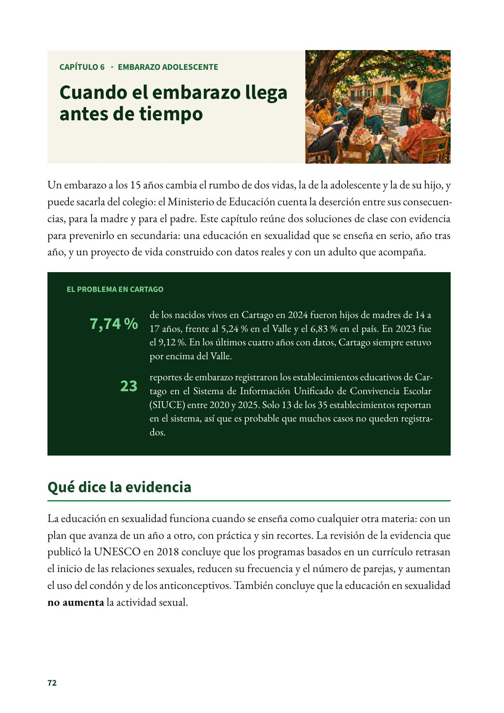
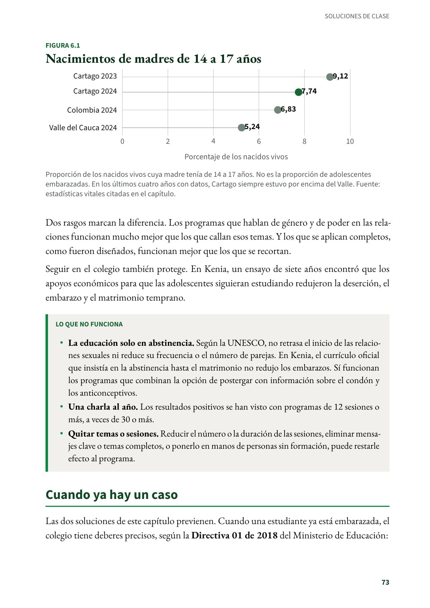

Cuando el embarazo llega antes de tiempo
Un embarazo a los 15 años cambia el rumbo de dos vidas, la de la adolescente y la de su hijo, y puede sacarla del colegio.
PDF · 3 págs. · 1,2 MBUn embarazo a los 15 años cambia el rumbo de dos vidas, la de la adolescente y la de su hijo, y puede sacarla del colegio: el Ministerio de Educación cuenta la deserción entre sus consecuencias, para la madre y para el padre. Este capítulo reúne dos soluciones de clase con evidencia para prevenirlo en secundaria: una educación en sexualidad que se enseña en serio, año tras año, y un proyecto de vida construido con datos reales y con un adulto que acompaña.
El problema en Cartago
- 7,74 % de los nacidos vivos en Cartago en 2024 fueron hijos de madres de 14 a 17 años, frente al 5,24 % en el Valle y el 6,83 % en el país. En 2023 fue el 9,12 %. En los últimos cuatro años con datos, Cartago siempre estuvo por encima del Valle.
- 23 reportes de embarazo registraron los establecimientos educativos de Cartago en el Sistema de Información Unificado de Convivencia Escolar (SIUCE) entre 2020 y 2025. Solo 13 de los 35 establecimientos reportan en el sistema, así que es probable que muchos casos no queden registrados.
Qué dice la evidencia
La educación en sexualidad funciona cuando se enseña como cualquier otra materia: con un plan que avanza de un año a otro, con práctica y sin recortes. La revisión de la evidencia que publicó la UNESCO en 2018 concluye que los programas basados en un currículo retrasan el inicio de las relaciones sexuales, reducen su frecuencia y el número de parejas, y aumentan el uso del condón y de los anticonceptivos. También concluye que la educación en sexualidad no aumenta la actividad sexual.
Dos rasgos marcan la diferencia. Los programas que hablan de género y de poder en las relaciones funcionan mucho mejor que los que callan esos temas. Y los que se aplican completos, como fueron diseñados, funcionan mejor que los que se recortan.
Seguir en el colegio también protege. En Kenia, un ensayo de siete años encontró que los apoyos económicos para que las adolescentes siguieran estudiando redujeron la deserción, el embarazo y el matrimonio temprano.
Lo que no funciona
- La educación solo en abstinencia. Según la UNESCO, no retrasa el inicio de las relaciones sexuales ni reduce su frecuencia o el número de parejas. En Kenia, el currículo oficial que insistía en la abstinencia hasta el matrimonio no redujo los embarazos. Sí funcionan los programas que combinan la opción de postergar con información sobre el condón y los anticonceptivos.
- Una charla al año. Los resultados positivos se han visto con programas de 12 sesiones o más, a veces de 30 o más.
- Quitar temas o sesiones. Reducir el número o la duración de las sesiones, eliminar mensajes clave o temas completos, o ponerlo en manos de personas sin formación, puede restarle efecto al programa.
Cuando ya hay un caso
Las dos soluciones de este capítulo previenen. Cuando una estudiante ya está embarazada, el colegio tiene deberes precisos, según la Directiva 01 de 2018 del Ministerio de Educación:
- Que siga estudiando. El rector la remite a la EPS de su familia, le da los permisos para sus controles médicos y le permite participar en las ceremonias y graduaciones. Con la asesoría de la secretaría de educación, el comité académico puede flexibilizar el currículo para que las adolescentes embarazadas, y también las madres y los padres adolescentes, sigan su formación.
- Seguimiento y registro. El comité escolar de convivencia hace el seguimiento del caso, que se registra en el módulo de embarazo del SIUCE. Ese módulo existe para acompañar el proceso educativo de la gestante, evitar que deserte y prevenir un segundo embarazo. La ruta de atención integral de la Ley 1620 de 2013 incluye los casos de embarazo en adolescentes.
- Si es menor de 14 años, se activa de inmediato la ruta de protección. El Código Penal castiga el acceso carnal y los actos sexuales con una persona menor de 14 años (arts. 208 y 209). El rector la remite también al centro zonal del ICBF o a la comisaría de familia. Si hay violencia sexual, se pide atención médica de urgencia. En Cartago, en 2024, la tasa de fecundidad de las niñas de 10 a 14 años fue de 1,53 nacidos vivos por cada 1.000 niñas de esa edad (en el Valle, 1,08, y en el país, 1,57).
Si en clase una estudiante revela una situación de violencia sexual, no se trata en el aula ni se indaga por cuenta propia: se activa la ruta. La clase no reemplaza la atención en salud ni la protección.
Fuentes del capítulo
Fuentes
Congreso de la República de Colombia. (2000). Ley 599 de 2000, por la cual se expide el Código Penal, arts. 208 y 209. secretariasenado.gov.co
Congreso de la República de Colombia. (2013). Ley 1620 de 2013, art. 29. secretariasenado.gov.co
Departamento Nacional de Planeación. (2026). TerriData: porcentaje de nacidos vivos hijos de mujeres de 14 a 17 años y tasa de fecundidad en mujeres de 10 a 14 años, con datos del Ministerio de Salud (Cartago, Valle del Cauca y Colombia). terridata.dnp.gov.co
Duflo, E., Dupas, P. y Kremer, M. (2015). Education, HIV, and early fertility: Experimental evidence from Kenya. American Economic Review, 105(9), 2757–2797. doi.org
Ministerio de Educación Nacional. (2018). Directiva 01 de 2018: orientaciones para prevenir la deserción escolar de niños, niñas y adolescentes madres o en embarazo, y padres adolescentes. mineducacion.gov.co
Ministerio de Educación Nacional. (2025). Informe anual del Sistema de Información Unificado de Convivencia Escolar (SIUCE). mineducacion.gov.co
UNESCO, ONUSIDA, UNFPA, UNICEF, ONU Mujeres y OMS. (2018). International technical guidance on sexuality education: An evidence-informed approach (ed. rev.). UNESCO. unesdoc.unesco.org
Así se ve en el libro
3 páginas
